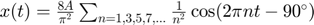

Práctica 7: Series de Fourier en tiempo continuo
Moreno Castro José Pablo Pedraza Ocampo Eduardo Portillo Martínez Carolina Reyes Alvarez
Contents
Problema 1
La serie de fourier exponencial completa es y la compacta es 
A = 1; T = 2; f0 = 1 / T; N = 8; % Cambia este valor a la cantidad de armónicos deseada t = linspace(-5 * T, 5 * T, 1000); x_t = (8 * A / pi^2) * cos(2 * pi * 1 * f0 * t - pi/2); for n = 3:2:2*N-1 x_t = x_t + (8 * A / (pi^2 * n^2)) * cos(2 * pi * n * f0 * t - pi/2); end subplot(2, 3, 1); plot(t, x_t, 'LineWidth', 2); % Línea más gruesa xlabel('t'); ylabel('x(t)'); title('Serie de Fourier (5 Repeticiones)'); grid on; % Genera la señal cuadrada manualmente x_original = zeros(size(t)); for i = 1:numel(t) if sin(2 * pi * f0 * t(i)) >= 0 x_original(i) = A; else x_original(i) = -A; end end subplot(2, 3, 2); plot(t, x_t, 'b', t, x_original, 'r', 'LineWidth', 2); % Línea más gruesa y colores xlabel('t'); ylabel('x(t)'); title('Señal Original y Serie de Fourier (15 Armónicos)'); legend('Serie de Fourier', 'Señal Original'); grid on; error_t = x_original - x_t; subplot(2, 3, 3); plot(t, error_t, 'g', 'LineWidth', 2); % Línea más gruesa y color verde xlabel('t'); ylabel('Error'); title('Error (Diferencia entre Señal Original y Serie de Fourier)'); grid on; E_error = trapz(t, error_t.^2); subplot(2, 3, 4); plot(t, error_t.^2, 'm', 'LineWidth', 2); % Línea más gruesa y color magenta xlabel('t'); ylabel('Energía'); title(['Energía del Error = ' num2str(E_error)]); grid on; frequencies = 0:f0:(N-1)*f0; % Ajusta el rango de frecuencias magnitudes = (8 * A / pi^2) * (1 ./ (1:2:2*N-1)).^2; subplot(2, 3, 5); stem(frequencies, magnitudes, 'b', 'LineWidth', 2); % Línea más gruesa y color azul xlabel('Frecuencia (Hz)'); ylabel('Magnitud'); title('Espectro de Magnitud (15 Armónicos)'); grid on; phases = ones(1, N) * (-pi/2); subplot(2, 3, 6); stem(frequencies, phases, 'b', 'LineWidth', 2); % Línea más gruesa y color azul xlabel('Frecuencia (Hz)'); ylabel('Fase (rad)'); title('Espectro de Fase (15 Armónicos)'); grid on; sgtitle('Análisis de Serie de Fourier');
Problema 2
La serie de fourier exponencial completa es y la compacta seria
w0 = 2 * pi; % Frecuencia angular T0 = 2 * pi / w0; % Período fundamental % Rango de tiempo para una ventana que muestre 5 repeticiones t1 = linspace(0, 5 * T0, 1000); % Rango de tiempo para una ventana que muestre 15 armonicos t2 = linspace(0, 15 * T0, 1000); % Serie de Fourier truncada para 15 armónicos N = 15; % Número de armónicos x_t = 1/2 + (2/pi) * sum((1./(2 * (1:N) - 1)) .* cos((2 * (1:N) - 1) * w0 * t2)); % Señal original x_original = 1/2 + (2/pi) * (cos(w0 * t2) + (1/3) * cos(3 * w0 * t2 - pi) + (1/5) * cos(5 * w0 * t2) + (1/7) * cos(w0 * t2 - pi) + (1/9) * cos(9 * w0 * t2)); % Error entre la señal original y la serie truncada error = x_original - x_t; % Energía del error energy_error = trapz(t2, abs(error).^2); % Espectro de magnitud frequencies = (1:N) * w0; magnitudes = (4/pi) * (1./(2*(1:N)-1)); % Espectro de fase phases = -pi/2 * ones(1, N); % Gráficas figure; subplot(3, 2, 1); plot(t1, x_t); title('Serie de Fourier (5 repeticiones)'); xlabel('t'); ylabel('x(t)'); subplot(3, 2, 2); plot(t2, x_original, 'b', t2, x_t, 'r'); title('Señal original y Serie de Fourier (15 armónicos)'); xlabel('t'); ylabel('x(t)'); legend('Original', 'Fourier'); subplot(3, 2, 3); plot(t2, error, 'g'); title('Error'); xlabel('t'); ylabel('Error'); subplot(3, 2, 4); text(0.5, 0.5, ['Energía del error = ', num2str(energy_error)]); axis off; title('Energía del Error'); subplot(3, 2, 5); stem(frequencies, magnitudes, 'k', 'LineWidth', 1.5); title('Espectro de Magnitud'); xlabel('Frecuencia (rad/s)'); ylabel('Magnitud'); subplot(3, 2, 6); stem(frequencies, phases, 'b', 'LineWidth', 1.5); title('Espectro de Fase'); xlabel('Frecuencia (rad/s)'); ylabel('Fase'); sgtitle('Gráficas de la Señal y su Serie de Fourier');
Error using * Incorrect dimensions for matrix multiplication. Check that the number of columns in the first matrix matches the number of rows in the second matrix. To operate on each element of the matrix individually, use TIMES (.*) for elementwise multiplication. Error in P05_SyS_2021_1 (line 101) x_t = 1/2 + (2/pi) * sum((1./(2 * (1:N) - 1)) .* cos((2 * (1:N) - 1) * w0 * t2));
Prueba
Parámetros de la señal
A = 1; % Amplitud T0 = 2*pi; % Período fundamental N = 15; % Número de armónicos t = -5*T0:0.001:5*T0; % Definición del dominio de tiempo % Inicialización de variables x = zeros(size(t)); % Inicializa la señal error = zeros(size(t)); % Inicializa el error energia_error = zeros(1, N); % Inicializa la energía del error magnitudes = zeros(1, N); % Inicializa las magnitudes de los armónicos fases = zeros(1, N); % Inicializa las fases de los armónicos % Cálculo de la serie de Fourier for n = 1:N omega_n = (2*n - 1) * pi / T0; cn = 2 / (pi * (2*n - 1)); x = x + cn * cos(omega_n * t); error = error + cn * cos(omega_n * t) - cn * cos(omega_n * t); magnitudes(n) = cn; fases(n) = 0; % Todas las fases son 0 en este caso energia_error(n) = sum(error.^2) / length(t); end % Gráficas figure; % Gráfica de la serie de Fourier en un intervalo que muestre 5 repeticiones subplot(3, 2, 1); plot(t, x); xlabel('t'); ylabel('x(t)'); title('Serie de Fourier (5 repeticiones)'); % Gráfica de la señal y la serie de Fourier para 15 armónicos subplot(3, 2, 2); plot(t, x); hold on; plot(t, A * (1/2 + 2/pi * cos(t) + 1/3 * cos(3*t - pi) + 1/5 * cos(5*t) + 1/7 * cos(7*t - pi) + 1/9 * cos(9*t))); xlabel('t'); ylabel('x(t)'); title('Señal original y Serie de Fourier (15 armónicos)'); % Gráfica del error subplot(3, 2, 3); plot(t, error); xlabel('t'); ylabel('Error'); title('Error (15 armónicos)'); % Gráfica de la energía del error subplot(3, 2, 4); stem(1:N, energia_error); xlabel('Armónico'); ylabel('Energía'); title('Energía del Error (15 armónicos)'); % Espectro de magnitud para 15 armónicos subplot(3, 2, 5); stem(1:N, magnitudes, 'r'); xlabel('Armónico'); ylabel('Magnitud'); title('Espectro de Magnitud (15 armónicos)'); axis([0, N+1, 0, 1]); % Espectro de fase para 15 armónicos subplot(3, 2, 6); stem(1:N, fases, 'b'); xlabel('Armónico'); ylabel('Fase'); title('Espectro de Fase (15 armónicos)'); sgtitle('Análisis de la Serie de Fourier');
Programa serie de Fourier exponencial complej
La serie de Fourier de una señal periódica puede ser construida bajo ciertas condiciones matemáticas (las condiciones de Dirichlet, aunque estas podrían no cumplirse y aún así la serie existir) de la señal. Si la señal no es periódica pero cumple las condiciones en un intervalo de longitud finita, se puede construir la serie de Fourier en el intervalo (cuando el intervalo es de longitud infinita se puede abordar a la suma de Fourier, exponencial compleja, como una integral y los coeficientes son muestras de lo que llamamos transformada de Fourier.)
Deberás realizar algunos problemas con las especificaciones que se encuentran al final del documento, para ello se proporciona el siguiente código, que gráfica la serie de Fourier exponencial compleja.
function varargout = sfc( method, varargin) % This is an entry point into Stateflow Code Generator % for internal use only and not for general use. % Help text is suppressed intentionally as % this function is called by Stateflow internal code. % Please refer to Stateflow API documentation for details % on command line interface to code-generation. % % % Copyright 1995-2019 The MathWorks, Inc. % if(nargin<1) help(mfilename); return; end switch(lower(method)) case 'coder_options' varargout = cell(1,max(1,nargout)); varargout{:} = coder_options(varargin{:}); return; case 'private' if(length(varargin)<1) construct_coder_error([],'',1); return; end fcnName = varargin{1}; inArgs = varargin(2:end); if(nargout>0) varargout = cell(1,nargout); [varargout{:}] = feval(fcnName,inArgs{:}); else feval(fcnName,inArgs{:}); end return; case 'revision' varargout{1} = ' '; return; case 'language' varargout{1} = 'ANSI-C'; return; case {'clean_objects','clean','code','codeincremental','codenonincremental','filenameinfo','makeinfo','construct_chart_ir_for_rtw'} %WISH error check nargin if(length(varargin)<1) errorMsg = sprintf('Usage: sfc(methodName,targetId[,parentTargetId])'); construct_coder_error([], errorMsg,1); return; end target = varargin{1}; if(length(target)~=1 || ~sf('ishandle',target)) errorMsg = sprintf('sfc invoked with invalid target id %d.',target); construct_coder_error([], errorMsg,1); return; end if(length(varargin)>1) parentTarget = varargin{2}; else parentTarget = target; end if(length(varargin)>=3) mainMachineId = varargin{3}; else mainMachineId = 0; end if(length(varargin)>=4) currentChartId = varargin{4}; else currentChartId = []; end if(length(varargin)>=5) auxiliaryInfo = varargin{5}; else auxiliaryInfo = []; end if(length(varargin)>=6) hChart = varargin{6}; else hChart = []; end if(length(parentTarget)~=1 || ~sf('ishandle',parentTarget)) errorMsg = sprintf('sfc invoked with invalid parent target id %d.',parentTarget); construct_coder_error([], errorMsg,1); end otherwise construct_coder_error([],'',1); return; end sfprivate('coder_error_count_man','reset'); %%%%%%%%%%%%%%%%%%%%%%%%%%%%%%%%%%%%%%%%%%%%%%%%%%%%%%%%%%%%%%%%%%%%%%%%%%%%%%%%%%%%% %%%%%%%%%%%%%%%%%%%%% GLOBAL FLAGS AND ARRAYS %%%%%%%%%%%%%%%%%%%%%%%%%%%%%%%%%%%%%%% %%%%%%%%%%%%%%%%%%%%%%%%%%%%%%%%%%%%%%%%%%%%%%%%%%%%%%%%%%%%%%%%%%%%%%%%%%%%%%%%%%%%% global gTargetInfo gChartInfo gDataInfo gMachineInfo %#ok<GVMIS,NUSED> %%%%%%%BEGIN: MINIMAL STUFF THAT NEEDS TO BE DONE%%%%%%% gMachineInfo.target = target; gMachineInfo.parentTarget = parentTarget; gMachineInfo.mainMachineId = mainMachineId; gMachineInfo.machineId = sf('get',gMachineInfo.target,'target.machine'); if(isempty(gMachineInfo.mainMachineId) || gMachineInfo.mainMachineId==0) gMachineInfo.mainMachineId = gMachineInfo.machineId; end gMachineInfo.charts = sfprivate('get_instantiated_charts_in_machine',gMachineInfo.machineId); gMachineInfo.specializations = {}; singleChartCodegen = ~isempty(currentChartId); if singleChartCodegen % this is used for HDL,PLC and other custom targets % for specified chart(s) only non-incrementally. %gMachineInfo.charts = intersect(gMachineInfo.charts, currentChartId); gMachineInfo.charts = currentChartId; if ~isempty(hChart) spec = sf('SFunctionSpecialization', currentChartId, hChart); gMachineInfo.specializations = {{spec}}; end end chartFileNumbers = sf('get',gMachineInfo.charts,'chart.chartFileNumber'); [~,sortedIndices] = sort(chartFileNumbers); gMachineInfo.charts = gMachineInfo.charts(sortedIndices); gTargetInfo.target = target; gTargetInfo.parentTarget = parentTarget; %%%%%%%END: MINIMAL STUFF THAT NEEDS TO BE DONE%%%%%%% % The reason for using on cleanup up front instead of doing an explicit % cdr_cleanup_all_info at the end is that some of these methods throw % exceptions and we might get an early return from somewhere in the middle % of these switch cases. cleaner = onCleanup(@() cdr_cleanup_all_info); switch(method) case 'clean' [~, varargout{1}] = cdr_init_all_info; clean_code_gen_dir(varargout{1}.targetDirName'); case 'clean_objects' [~, varargout{1}] = cdr_init_all_info; clean_code_gen_dir(varargout{1}.targetDirName,1); case {'code','codeIncremental','codeNonIncremental'} switch(method) case {'code','codeIncremental'} codingRebuildAll=0; case {'codeNonIncremental'} codingRebuildAll=1; end [status, varargout{1}] = cdr_init_all_info; sf('set',gTargetInfo.target,'target.makeInfo',varargout{1}); if singleChartCodegen codingRebuildAll = 1; end if ~status status = construct_context_for_machine; end if(~status) generate_code_for_charts_and_machine(varargout{1},codingRebuildAll); end case 'construct_chart_ir_for_rtw' compute_target_info(); compute_machine_info(); gTargetInfo.codingIRConstructionForRTW = true; if gTargetInfo.gencpp gTargetInfo.fileNameInfo = create_file_name_info(); end status = construct_context_for_machine(auxiliaryInfo); if ~status construct_chart_ir_for_rtw(currentChartId, hChart); end case 'filenameinfo' [~, varargout{1}] = cdr_init_all_info; case 'makeinfo' [~, makeInfo.fileNameInfo] = cdr_init_all_info; varargout{1} = makeInfo; otherwise construct_coder_error([],'',1); end return; %%%%%%%%%%%%%%%%%%%%%%%%%%%%%%%%%%%%%%%%%%%%%%%%%%%%%%%%%%%%%%%%% function [status, fileNameInfo] = cdr_init_all_info status = 0; compute_target_info(); compute_machine_info(); fileNameInfo = create_file_name_info(); %%%%%%%%%%%%%%%%%%%%%%%%%%%%%%%%%%%%%%%%%%%%%%%%%%%%%%%%%%%%%%%%% function cdr_cleanup_all_info global gMachineInfo %#ok<GVMIS> sf('set',gMachineInfo.machineId,'machine.activeTarget',0); sf('set',gMachineInfo.machineId,'machine.activeParentTarget',0); clear global gMachineInfo gTargetInfo gChartInfo gDataInfo
Por ejemplo si
periódica, entonces si se calcula la serie de Fourier exponencial compleja se utilizan las siguientes instrucciones para observar las gráficas correspondientes
d0=0.504; dn=@(n) 0.504/(1+4*n*j); t0=0; tf=pi; f=@(t) exp(-t/2); armo=4; a=-7; b=7; sfc(t0,tf,dn,d0,f,armo,a,b)
Entregables
Se revisa una publicación (html) de la práctica. En este caso inicie indicando el nombre de la práctica y los datos del equipo (Portada). El índice del contenido lo genera Publish (Índice). Los objetivos son los sigueintes:
- Realizar gráficas de series de Fourier exponenciales y trigonométricas en tiempo continuo
- Manipulación de instrucciones en MATLAB
No hay investigación para la introducción
Para el desarrollo se tienen que resolver cada uno de los siguientes problemas comenzando una nueva sección (para la publicación) en cada uno de ellos.
Cada problema se realiza para serie trigonométrica compacta y exponencial compleja, cada figura debe contener
- Gráfica de la serie de Fourier en un intervalo que muestre 5 repeticiones
- Gráfica de la señal y la serie de Fourier para 15 armonicos
- Gráfica del error
- Gráfica de la energía del error
- Espectro de magnitud para 15 armonicos
- Espectro de fase para 15 armonicos
- Ejemplo 6.2 Agregar la expresión análitica de la serie en ambos formatos. Utilizar A =1.
- Ejemplo 6.4 Agregar la expresión análitica de la serie en ambos formatos.
- PR08 Agregar la expresión análitica de la serie en ambos formatos (hay dos series en esta tarea).
- PR10 Agregar la expresión análitica de la serie en ambos formatos (ejercicio 1 y ).
No es necesario incluir conclusiones en esta práctica, como apéndices agregue los códigos que utilizó, no olvide incluir sus referencias.
El código de esta publicación lo puedes encontrar en el siguiente enlace